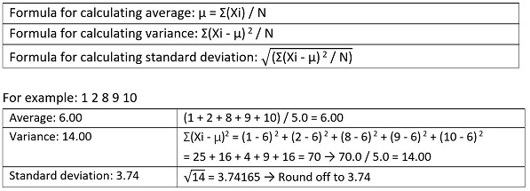

Statistics
Fall 2017: Question 7 (use C language to make this program)
From five input numbers, please calculate the average, population variance, and standard deviation, and make sure that the results are rounded down to TWO decimal places. 
Input instruction: Input five numbers.
Output instructions:
- Display the following in order: Population variance, Standard deviation, Average
- All outputs must be displayed to TWO decimal places.
| Sample Input | Expected Output |
|---|---|
| 1 2 8 9 10 | 14.00 3.75 6.00 |